Press
Written up, talked about, filmed.
Every article, podcast and video we know of that covers OpenStation. Some of it was published before the rename, so you will see it called Desktop Mode throughout.
Articles
3-
webhosting.todayNatalia Nowak
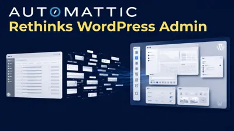
Automattic Turns the WordPress Admin Into a Desktop Software What the plugin actually changes in wp-admin, read against the same quarter that put an AI client into WordPress 7.0 and agent abilities into WooCommerce. 15 Jun 2026 -
wpskinner.comSerhii Biloshytskyi
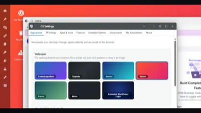
Desktop Mode Plugin for WordPress: A Fresh Take on Admin UI A hands-on review of the windows, the dock, the taskbar and Spaces, written for anyone who has found the default admin restrictive. 16 May 2026 -
happas.jp
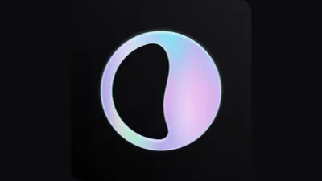
Desktop Mode | The Automattic Plugin That Turns Your WP Admin Into a Desktop OS A Japanese review, published in English: it looks like an experiment until you need two admin screens open at once, and then it turns out to be practical. 10 May 2026
Podcasts
4-
WP BuildsThis Week in WordPress
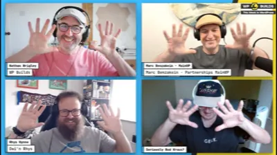
#383 “Blame Nathan subscription service” openstation.me itself makes the week's plugins and tools roundup, with Nathan Wrigley, Rhys Wynne, Marc Benzakein and Bud Kraus. 11 Aug 2026 -
WP BuildsThis Week in WordPress
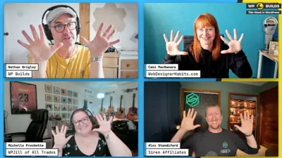
#382 “I only do puns on porpoise” The 0.9.6 release in the news roundup, next to Daniel López on X:If someone told me this was WordPress, I'd say they were out of their mind.
4 Aug 2026 -
WP BuildsThis Week in WordPress
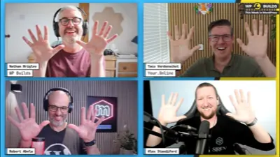
#377 “Events” Picked up under new features and experiments coming out of WordPress.com, by way of the Meet Desktop Mode announcement. 23 Jun 2026 -
WP BuildsThis Week in WordPress
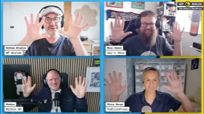
#373 “Licking and rubbing” The first time the panel picks it up, introduced as a plugin that builds a desktop-like workspace inside wp-admin. 12 May 2026
Video
6-
hasanYouTube
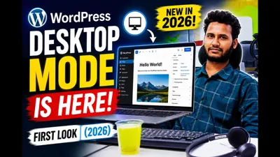
🔥 WordPress Desktop Mode is HERE! First Look 2026 13 Jun 2026 -
Key2BloggingYouTube
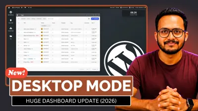
🚨 BREAKING: WordPress Desktop Mode is Finally Here! (2026) 18 May 2026 -
WP103YouTube
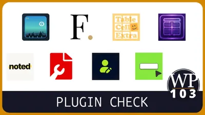
8 New WordPress Plugins You Should Know About (May 2026) 15 May 2026 -
Ayuda WordPressYouTube, live
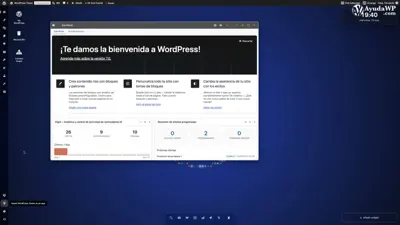
Desktop Mode: WordPress como sistema operativo, ¿no decían que no tenía futuro? 13 May 2026 -
WP103YouTube, short
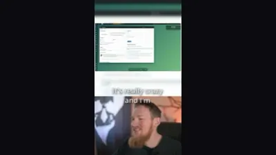
Crazy WordPress Plugin! Desktop Mode 8 May 2026 -
WPTutsYouTube
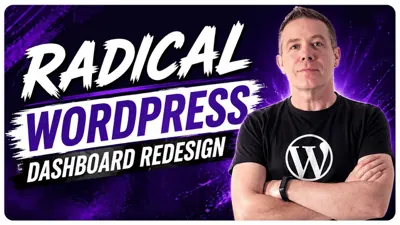
MUST SEE: WordPress Dashboard Gets a Radical Redesign 29 Apr 2026